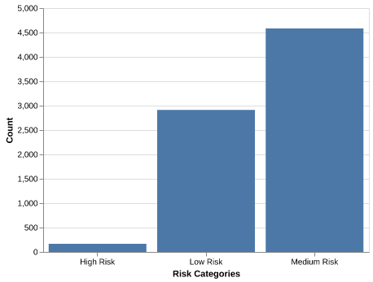

| Column | Non-Null | Dtype | |
|---|---|---|---|
| 0 | credit.policy | 7662 | int64 |
| 1 | purpose | 7662 | object |
| 2 | int.rate | 7662 | float64 |
| 3 | installment | 7662 | float64 |
| 4 | log.annual.inc | 7662 | float64 |
| 5 | dti | 7662 | float64 |
| 6 | fico | 7662 | int64 |
| 7 | days.with.cr.line | 7662 | float64 |
| 8 | revol.bal | 7662 | int64 |
| 9 | revol.util | 7662 | float64 |
| 10 | inq.last.6mths | 7662 | int64 |
| 11 | delinq.2yrs | 7662 | int64 |
| 12 | pub.rec | 7662 | int64 |
| 13 | not.fully.paid | 7662 | int64 |
P2P Online Lending Default Prediction- A Usecase on LendingClub Default Risk
1. Summary
This work intends to leverage machine learning models to predict borrower behavior and, hence, the probability of default. More specifically, the work focuses on predicting loan defaults using historical data from the Lending Club platform. We uncover patterns and trends in borrower risk profiles by applying advanced preprocessing techniques, exploratory data analysis (EDA), and a Logistic Regression model. The final model demonstrated strong performance on unseen test data, achieving an accuracy of 84.0%. Out of 1,916 test cases, the model correctly predicted 1,608 cases, with 308 incorrect predictions. These errors included both false positives (predicting a loan default when it didn’t occur) and false negatives (failing to predict an actual default). While false negatives pose a greater risk in financial decision-making, this model provides actionable insights to improve risk management and reduce potential financial losses for the platform. Despite its promising predictive capabilities, further research is needed to enhance the model’s accuracy and better understand the characteristics of misclassified loans. Such improvements could play a crucial role in minimizing financial risks and maximizing the model’s effectiveness in peer-to-peer lending platforms
2. Introduction
Crowd-based business models are one of the last decade’s developments with the proliferation of platform economies and web technology applications (Sutherland and Jarrahi 2018). One of such developments following the 2007 financial crisis are the P2P online lending platforms. The backbone of the digital economic system built on this is that it relies on trust a currency. Like all other crowd-based business models, P2P online lending heavily relied on trustworthiness of borrowers. To help with this, online platforms like LendingClub used a number of features to define eligibility and rate of access to loan for potential borrowers.Traditional credit risk analysis often relies on rule-based systems or credit scores, which might not fully capture the complexities of borrower behavior. By applying Logistic Regression, we aim to develop a model that is both interpretable and effective in identifying high-risk loans. This analysis intends to provide a data-driven approach to improve credit decision-making in a broader context of platform based transactions through machine learning models. Extensive research has been conducted on borrower risk behaviour analysis and trust within P2P online lending system, highlighting the critical role trust and predictability holds in ensuring platform sustainability and mitigating default risks (Cai et al. 2016). Building on this, this work focuses on developing a comprehensive risk analysis framework through machine hlearning models that will help predict borrower behaviour.
3. Methods
3.1 Data
Data Source
This analysis is based on the historic loan data from LendingClub (matmcreative 2024). It contains various borrower and loan features, such as interest rates, annual income, debt-to-income ratio (DTI), and credit history. The target variable, not.fully.paid, indicates whether the borrower defaulted on the loan (1) or successfully repaid it (0).
Feature Description
The key features taken into account for this analysis are:
| Variable | Description |
|---|---|
purpose |
The purpose of the loan |
int.rate |
Interest rate of the loan the applicant received |
installment |
Monthly payment for the loan the applicant received |
log.annual.inc |
Annual income (growth rate) |
dti |
Debt-to-income ratio |
revol.bal |
Total credit revolving balance |
revol.util |
Revolving line utilization rate |
inq.last.6mths |
The number of inquiries in the past 6 months |
delinq.2yrs |
Delinquencies on lines of credit in the last 2 years |
pub.rec |
The number of derogatory public records |
fico |
FICO credit score |
days.with.cr.line |
Days with Credit Line |
not.fully.paid |
Binary response on whether the loan is paid or not |
Data Splitting to Training and Testing Data
Train-Test Split:
The dataset was split into training (80%) and test (20%) sets, resulting in 1916 observations in the test set. Features: The model was trained on both numeric features (e.g., int.rate, installment) and categorical features (e.g., purpose, loan_categories).
Preprocessing:
Numeric features were scaled using StandardScaler, while categorical features were one-hot encoded. Missing values were imputed using the median (numeric) or most frequent value (categorical).
3.2 Analysis
Train-Test Split: The dataset was split into training (80%) and test (20%) sets, resulting in 1916 observations in the test set.
Features: The model was trained on both numeric features (e.g., int.rate, installment) and categorical features (e.g., purpose, loan_categories).
Preprocessing: Numeric features were scaled using StandardScaler, while categorical features were one-hot encoded. Missing values were imputed using the median (numeric) or most frequent value (categorical).
Model: Logistic Regression was selected as the final model for its simplicity, slightly higher accuracy, and interpretability. All columns except
risk_categorywere used in model fitting.risk_categorywas drop due to it being redundant to “loan_categories” (both derived from “fico” score). A grid search with 10-fold cross-validation on the hyperparameterCof the logistic regression model is used for optimization. Python language was used to conduct this analysis.
4. Results and Discussion
4.1 Exploratory Data Analysis
In order for us to draw context about the data, let us have a look at the first few rows of the data; check the info about all columns, data types, and number of NaN values; and summary statistis.
To evaluate the usefulness of predictors for identifying loan defaults, we conducted an exploratory data analysis. (Figure 1) Features such as int.rate (interest rate) and dti (debt-to-income ratio) displayed notable differences between borrowers who fully paid their loans and those who defaulted. For example, loans with higher interest rates (int.rate) were associated with a greater likelihood of default, while borrowers with lower debt-to-income ratios (dti) were less likely to default.
Defaulted(1) and Fully Paid(0)
Here, from a business perspective, we need to identify high-risk and low-risk loan profiles to improve lending profitability while minimizing default rates. This includes assessing borrower behavior, income stability, and loan utilization to create a predictive model for effective risk categorization (Coşer, Maer-Matei, and Albu 2019).
Key metrix and considerations: - Debt-to-Income Ratio
Credit Utilization Ratio( revol.util)_ how much of their revolving credit borrowers are using relative to their limit with higher values indicating possible financial strain.
Loan Duration vs. Risk: If longer-term loans are associated with higher default rate (days.with.cr.line).
4.1.2 Loan categories
Below, to help us create the loan categories, we are using the FICO risk profile categories (Consumer Financial Protection Bureau 2024)
Deep subprime (credit scores below 580)
Subprime (credit scores of 580-619)
Near-prime (credit scores of 620-659)
Prime (credit scores of 660-719)
Super-prime (credit scores of 720 or above)
Categorical features like purpose also provided significant insights; loans categorized under “small business” and “credit card” showed higher default rates compared to others, such as “home improvement.” (Figure 2)

4.1.3 Risk categories
Let us explore the data further with specific borrower risk profile categories. Based on the above 5 loan categories, we framed three main risk categories as high, medium and low risk profile with: fico score of at least 720 (Low Risk), ‘fico’ score between 650 and 720 (‘Medium Risk’) and ‘fico’ score of 650 as ‘High Risk’.
We have a high concentration of loans in the medium risk category and significant number low risk borrowers as compared to the high risk borrowers(Figure 3).

4.1.3 Descriptive Analysis
From the boxplot below (Figure 4), we see that the low risk borrowers have lower average debt-to-income-ratio as compared to the borrowers with medium and high risk profile, based on their fico score. Note also the outliers in FICO scores for the loan purpose of debt consolidation type.

From the boxplot above (Figure 5), we see that the low risk borrowers have lower average debt-to-income-ratio as compared to the borrowers with medium and high risk profile, based on their fico score. Note also the outliers in FICO scores for the loan purpose of debt consolidation type.
4.1.4 Correlation Analysis
The EDA for most of the numerical columns produce no strong general trends. We see a higher correlation level between fico and revo.util, and that of fico and interest rate. (Figure 6)

4.2 Model Building
First we performed 10-folds cross-evaluation on four classifier models: DecisionTree, kNN-neighbours, SVC and Logistic Regression.
| fit_time | score_time | test_score | train_score | |
|---|---|---|---|---|
| Decision Tree | 0.115(+/-0.012) | 0.005(+/-0.001) | 0.737(+/-0.016) | 1.000(+/-0.000) |
| kNN | 0.016(+/-0.000) | 0.026(+/-0.041) | 0.823(+/-0.008) | 0.855(+/-0.001) |
| SVC | 1.458(+/-0.024) | 0.120(+/-0.001) | 0.841(+/-0.002) | 0.845(+/-0.000) |
| Logistic Regression | 0.026(+/-0.005) | 0.003(+/-0.000) | 0.839(+/-0.003) | 0.840(+/-0.000) |
From the mean validation score and training score, we can see that the decision tree model has a much smaller cross-validation score compared to the other three models.
While the SVC model has a slightly larger test score than the logistic model, it requires a significantly longer computation time. Since the test score for SVC and Logistic Regression is very similar (both being ~0.84), We have opt for the logistic regression model as our predictor.
The train score of the Logistic Regression is the same as the validation score, suggesting that the model is likely not overfitted and will be able to generalize well to unseen data. While together with the fact that SVC has a significantly longer computation time,
| Best C | Mean Test Score | Mean Train Score | |
|---|---|---|---|
| 0 | 0.000687 | 0.839989 | 0.83999 |
Here, we identify the top 5 influential features for predicting each class (Table 4, Table 5,). The Logistic Regression’s coefficients provide insights into feature importance, highlighting predictors such as:
fico: Higher credit score were strongly correlated with lower default risk.
loan_income_ratio: Borrowers with higher loan-to-income ratios exhibited a greater likelihood of default.
log.annual.inc: Borrowers with higher log annual income correlates with lower default risk.
int.rate: Borrowers with higher interest rates has a greater likelihood of default.
inq.last.6mths: Borrowers that has more inquires in the past 6 months has a higher default risk.
Defaulted(1)
| features | positive coefficient | |
|---|---|---|
| 0 | num__fico | -0.1034 |
| 1 | num__credit.policy | -0.101 |
| 2 | num__log.annual.inc | -0.0533 |
Fully Paid(0)
| features | negative coefficient | |
|---|---|---|
| 0 | num__int.rate | 0.1193 |
| 1 | num__inq.last.6mths | 0.1105 |
| 2 | num__installment | 0.0621 |
The model achieved an test score of 0.8398.
| Predict Positive (defaulted) | Predict Negative (fully paid) | ||
|---|---|---|---|
| 0 | True Positive (defaulted) | 0 | 306 |
| 1 | True Negative (fully paid) | 1 | 1609 |
The model correctly predicted 1608 cases out of 1916 on the test set, with 308 errors (Table 6). These errors were distributed across false positives and false negatives. False negatives, representing cases where a defaulted loan was not flagged, pose a greater financial risk, as these borrowers are likely to incur losses. False positives, on the other hand, might result in stricter lending requirements for borrowers who would have successfully repaid their loans.
Despite the high accuracy score, our model fails to identify any of the 306 actual default loans. This suggests that the accuracy score cannot fully reflect the model performance. However, our model is a great predictor in identifying negative loan defaults (over 99% of the fully paid cases identified), and the high false negative limits its real-life application. Further steps are needed to improve the model so that it can also predict defaulted loans well.
Future work will focus on improving the model’s ability to predict defaults by exploring methods for handling imbalanced datasets. One approach is to experiment with machine learning models designed to manage class imbalance better:
- Data-level Adjustments: Undersampling to Reduce the number of majority class instances to balance the dataset; Oversampling: Increasing the number of minority class instances to achieve balance; Random Oversampling: Duplicating minority class instances at random; SMOTE: Generating synthetic examples of the minority class to train the model better; and
(2)Training Procedure Adjustments like Stratified Splits, Class Weight Adjustment and Dynamic Resampling.
4.3 Limitations
Fully Paid(0)
| not.fully.paid | proportion |
|---|---|
| 0 | 0.839859 |
| 1 | 0.160141 |
As we check the distribution of the target, we can see that the proportion of borrowers that has repayed their loans is significantly higher than those who defaulted their loans. The class imbalance of the target results in the model predicting most cases as “negative” (fully paid).
Possible solutions to the high false negtative include adjusting the class_weight hyperparameter or adjusting the decision threshold of the logistic model. Since accuracy might not fully reflect the model performance in the case of class imbalance, it would be good to include other evaluation metrics when evaulating model performance.
Also, based on the feature importances obtained, additional feature engineering or feature selection can potentially improve model performance.
To account for possible non-linear decision boundary, another alternative is to use a non-linear classification model, for example a decision tree, which can model complex non-linear decision boundaries better.
Reference
Cai, Shun, Xi Lin, Di Xu, and Xin Fu. 2016. “Judging Online Peer-to-Peer Lending Behavior: A Comparison of First-Time and Repeated Borrowing Requests.” Information & Management 53 (7): 857–67.
Consumer Financial Protection Bureau. 2024. Borrower Risk Profiles. https://www.consumerfinance.gov/data-research/consumer-credit-trends/student-loans/borrower-risk-profiles/.
Coşer, Alexandru, Monica Mihaela Maer-Matei, and Crişan Albu. 2019. “PREDICTIVE MODELS FOR LOAN DEFAULT RISK ASSESSMENT.” Economic Computation & Economic Cybernetics Studies & Research 53 (2).
matmcreative. 2024. Lending-Club-Loan-Analysis. https://github.com/matmcreative/Lending-Club-Loan-Analysis.
Sutherland, Will, and Mohammad Hossein Jarrahi. 2018. “The Sharing Economy and Digital Platforms: A Review and Research Agenda.” International Journal of Information Management 43: 328–41.